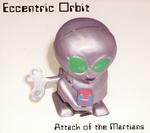

Home Artist links

Eccentric Orbit - Attack Of The Martians
| Artist: | Eccentric Orbit |
| Title: | Attack Of The Martians |
| Label: | self produced EOCD1 |
| Length(s): | 45 minutes |
| Year(s) of release: | 2004 |
| Month of review: | [07/2004] |
Line up
Mark Cella - drums, percussion
Bill Noland - bass
Madeleine Noland - wind-controlled synths, keyboards
Derek Roebuck - keyboards
Tracks
| 1) | Star Power | 7.36
|
| 2) | Sputnik | 7.08
|
| 3) | Attack Of The Martians | 10.41
|
| 4) | Forbidden Planet | 14.09
|
| 5) | The Enemy Of My Enemy | 6.06
|
Summary
Although this is their debut, this band is not without experience:
members of the band played in Pye Fyte (Gathering Of The Krums), on Between
Cages of A Triggering Myth and had various appearances on prog compilations.
This album, sheathed in a nice digipack, can be obtained via M & M Music.
The music
Star Power is the opener of this album, and for those in favour of the mellotron: the opening is solely tron. It should not be surprising that
Watcher Of The Skies comes to mind here. Later brimming organ takes over,
menacingly. When the beat starts, we are solidly in Anekdoten territory.
The pace goes up, at which moment the bass starts to grind and the organ
combines Deep Purple with ELP. Melodically, the band borrows from
Peer Gynt. This is a more jam oriented phase, with only little focus on
composition. The Anekdoten feel returns, which gives this song a halfhearted
feel: in some respects modern, in others sounding quite dated. Playfulness
is also important, in view of the frolic keyboards towards the end, which
mostly remind of ELP, but a bit careful and slow in execution. If you do this
kind of material, it should erupt from the speakers. And for that the pace
is a bit too low.
Sputnik opens nicely with a strong melody on the keyboards, somewhat Arabic
in feel. It is melodies such as these that the music needs to become really
good. Otherwise too much the impression is evoked that it is the playing and
not the music itself that gets all attention. The vibe of this song is the
same as the previous one: very seventies, and of course extremely keyboards
dominated. Fortunately, the band also includes some darker, slower, bass
dominated passages, which help to vary the mood.
Attack Of The Martians really sounds like the soundtrack for an SF movie,
one in which one or people are chased by one or more martians. The ELP
feel is strong again, although there are also pointers to Queen's
Flash Gordon. Melodically, I find the music lacking in places, satisfactory
in others. When the band starts to jam a bit more, the music has trouble
keeping my attention, in other places the melodies give just that little bit
more. The bass intermezzo makes for a turn towards jazz, with the keyboards
providing the vibe.
Bleepy sounds open Forbidden Planet. A slow plodding build-up here, dominated
by the ponderous guitar and some nice piano lines, reminiscent of David Sylvian
no less and maybe a bit of Patrick O'Hearn. Then the mellotron sets in again,
while the bass stays at the fore. This is certainly a more relaxed, but
certainly not lighter tune. I like the use of piano here as opposed to all
the organ soloing of the foregoing tracks. These only come in the second
half of the track, which also contains some more powerful Crimsonesque
elements.
The Enemy Of My Enemy opens with raw bass work, and menacing organ play.
Some nice thematic work here, with also some up-beat, distinctive melodies.
Conclusion
Compared to the competition, Anekdoten, Pär Lindh and such, Eccentric
Orbit does not make it (yet).
The sound is very keyboards dominated, very seventies with pointers to ELP (especially), Deep Purple, and at times plenty of mellotron. Although
the band plays around with moods at times, and builds some nice atmospheres
while also inserting a nice theme here and there, I get the impression that
the improvised sounding parts lack in substance and melody to continually captivate: I have heard it before and it shows.
Still, for the nostalgic keyboards/tron/organ prog fan (every ELP fan should
go ahead and take a listen), there is plenty to like here, even to love, and
nothing disagreeable is to be found.
© Jurriaan Hage